|
4-4-2
|
Argentina | 2 | - | 0 | Austria |
4-2-3-1
|
| HT 1-0 | ||||||
|
FIFA World CupMonday 22 June 2026
|
||||||
- Venue
- Dallas Stadium
- Attendance
- 70,649
- Referee
- Amin Mohamed Omar
Missed penalty9'
L. Messi
Goal38'
L. Messi
Assist: F. Medina
Substitution57'
C. Romero
N. Otamendi
Substitution64'
T. Almada
J. Alvarez
Substitution65'
Lautaro Martínez
N. González
Yellow card76'
F. Medina
- 2
Substitution82'
R. De Paul
L. Paredes
F. Medina
N. Tagliafico
Yellow card90+2'
L. Paredes
Goal90+5'
L. Messi
Whistle45+7'
45+7'
Yellow card40'
S. Posch
Substitution67'
D. Alaba
M. Friedl
- 2
Substitution68'
S. Posch
A. Prass
P. Wanner
M. Arnautović
Yellow card76'
K. Laimer
Substitution78'
R. Schmid
P. Wimmer
Substitution85'
M. Gregoritsch
C. Chukwuemeka
VAR FT'
Reason: Penalty not awarded
Argentina | |
|---|---|
Goalkeeper | |
| 23 | E. Martínez |
Defender | |
| 6 | Lisandro Martínez |
| 13 | C. Romero 57' |
| 25 | F. Medina 76'82' |
| 26 | N. Molina |
Midfielder | |
| 7 | R. De Paul 82' |
| 16 | T. Almada 64' |
| 20 | A. Mac Allister |
| 24 | E. Fernández |
Forward | |
| 10 | L. Messi 9'38'90+5' |
| 22 | Lautaro Martínez 65' |
Substitutes | |
| 3 | N. Tagliafico 82' |
| 5 | L. Paredes 82'90+2' |
| 9 | J. Alvarez 64' |
| 15 | N. González 65' |
| 19 | N. Otamendi 57' |
Austria | |
Goalkeeper | |
| 1 | A. Schlager |
Defender | |
| 3 | K. Danso |
| 5 | S. Posch 40'68' |
| 8 | D. Alaba 67' |
| 20 | K. Laimer 76' |
Midfielder | |
| 4 | X. Schlager |
| 6 | N. Seiwald |
| 9 | M. Sabitzer |
| 18 | R. Schmid 78' |
| 24 | P. Wanner 68' |
Forward | |
| 11 | M. Gregoritsch 85' |
Substitutes | |
| 7 | M. Arnautović 68' |
| 17 | C. Chukwuemeka 85' |
| 21 | P. Wimmer 78' |
| 22 | A. Prass 68' |
| 23 | M. Friedl 67' |


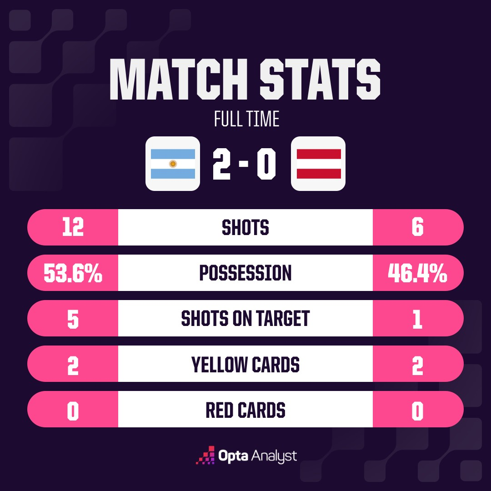
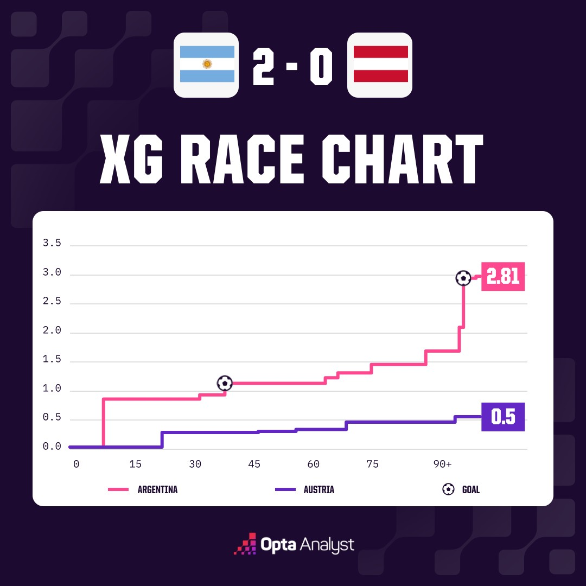
99'
Argentina are undefeated in their last 8 games in the FIFA World Cup, their last longer unbeaten streak was from 12th June 2002 to 27th June 2010, a run of 10 games.
99'
Austria attempted 6 shots in this game, their lowest total in a single match in the 2026 FIFA World Cup.
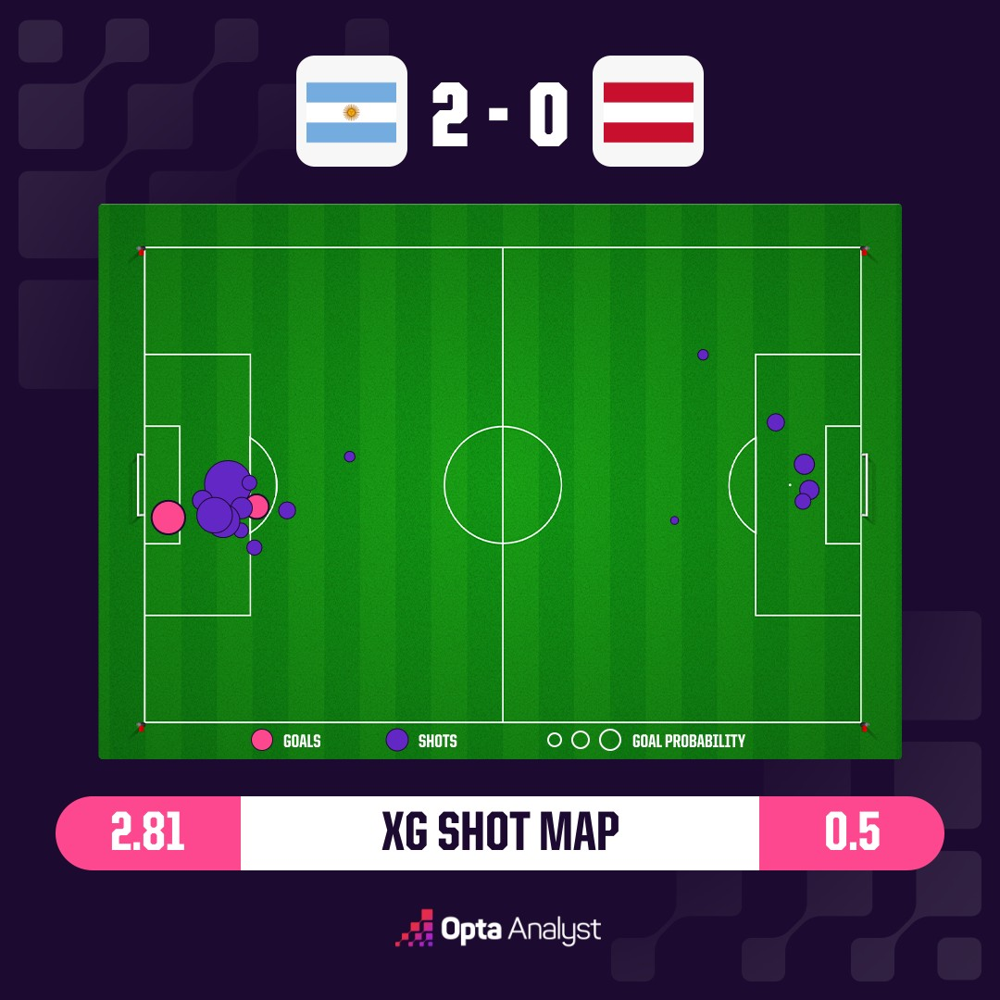
90+8'
Argentina WIN! It’s all over at Dallas Stadium, with Argentina coming out on top 2-0 over Austria, thanks to goal from Lionel Messi.
90+8'
No luck! Lionel Messi takes on a shot that, had they got it right, might have been set to test the goalkeeper, but instead it is sent off target and Austria come away unscathed.
90+7'
Can Argentina make this chance count? They have won a free-kick in a threatening position after a foul from Patrick Wimmer on Lionel Messi. Will Austria's defence be tested here?
90+5'
Lionel Messi has scored his 18th goal in the FIFA World Cup.
90+5'
Lionel Messi! That is another goal for Argentina, who now lead 2-0! Is there any way back into this one for Austria? Their prospects look bleak, unless they can find a swift response.
90+5'
Lionel Messi has attempted 5 shots, the first time he has attempted at least 5 shots in a match in the FIFA World Cup since facing Algeria on 17th June 2026 (6 shots).
90+5'
CLEARANCE! Excellent from Nicolas Seiwald, who gets back to make a brilliant, goal-saving intervention, preventing Lionel Messi’s effort from going over the line. What a vital bit of defending from the Argentina player.
90+4'
An opportunity for Argentina to extend their lead goes begging, as Julián Alvarez is unable to convert from a good opening. Will they live to regret that miss?
90+4'
It’s backs to the wall now — Argentina throwing everything into defending their advantage, with a flurry of crucial interventions.
90+3'
A chance goes begging as Patrick Wimmer gets off a shot that does not hit the target. They might have done better with that one, but instead it is a goal-kick to Argentina.
90+2'
A yellow card for Argentina's Leandro Paredes. They will have to walk a tightrope for the rest of this match, and Austria will likely look to target them and draw a second bookable offence.
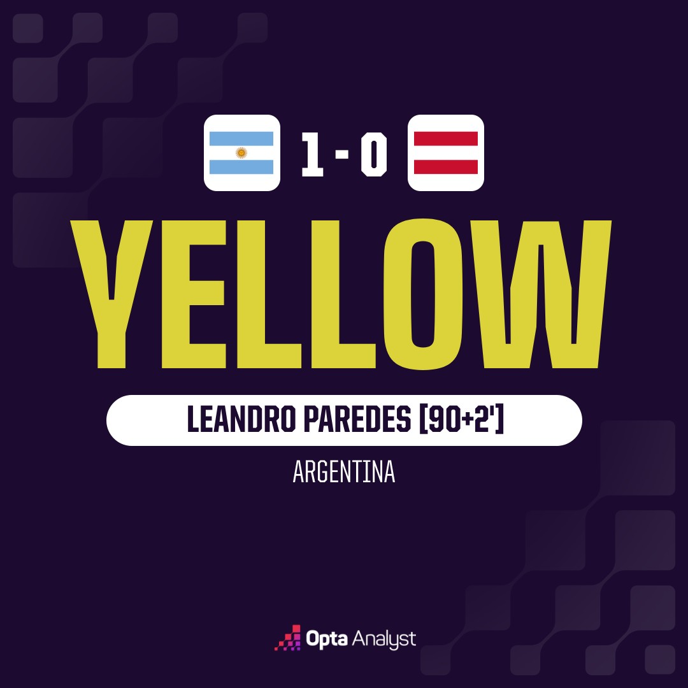
90+2'
A rash challenge from Leandro Paredes, who sends Carney Chukwuemeka tumbling, giving Austria a free-kick. It is not in a threatening position, but it gives them a chance to get back on the ball.
90+1'
Can Argentina make this chance count? They have won a free-kick in a threatening position after a foul from Patrick Wimmer on Nico González. Will Austria's defence be tested here?
89'
A foul from Nicolás Otamendi on Patrick Wimmer sees Austria win a free-kick, but it is not in a dangerous position, so Argentina should be confident they can defend it easily enough.
88'
A free-kick to Argentina, as Patrick Wimmer goes in and fouls Nicolás Tagliafico. However, Austria will not mind giving one away in this area too much, with plenty of distance to their goal.
86'
Shot blocked! Enzo Fernández unleashes an attempt at goal, but the ball does not reach its target thanks to Marco Friedl, who makes a solid block to stem the danger – for now.
86'
Shot blocked! Nico González unleashes an attempt at goal, but the ball does not reach its target thanks to Kevin Danso, who makes a solid block to stem the danger – for now.
85'
Substitution! Carney Chukwuemeka replaces Michael Gregoritsch for Austria as the manager shuffles the pack. Can Carney Chukwuemeka make an impression as this match continues?
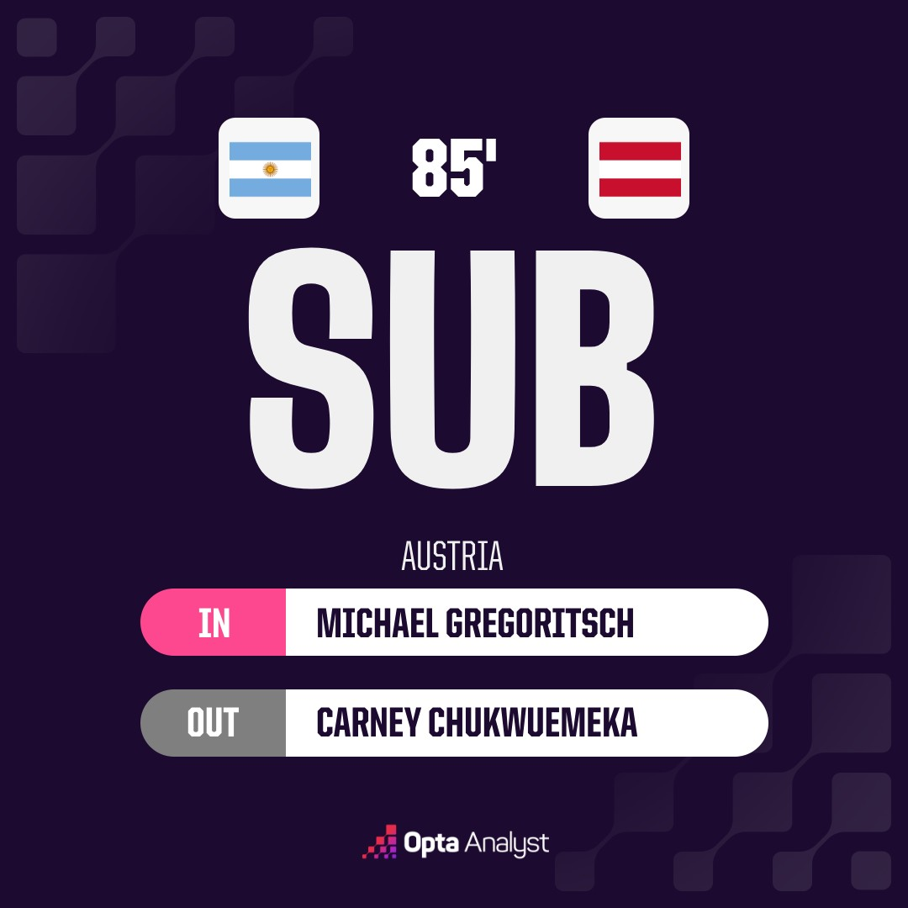
84'
In the last 15 minutes, it is Austria who have dominated the ball, having seen 66.12% of the possession, yet they have not been able to go and turn that into a single shot, so there is no imminent sign of a goal.
83'
A lull in this match, as the teams prob and probe, but without much success. It has been 10 minutes since there was an attempt from either side, though Austria are seeing more of the ball, with 70 per cent possession to Argentina’s 30 per cent during that time.
82'
A substitution for Argentina sees Facundo Medina replaced by Nicolás Tagliafico. There does not appear to be any obvious sign of an injury, so that is a tactical switch.
82'
A substitution for Argentina sees Rodrigo De Paul replaced by Leandro Paredes. There does not appear to be any obvious sign of an injury, so that is a tactical switch.
81'
Corner! The ball goes behind and now Austria will aim to deliver a good ball into the penalty area and test that Argentina defence, which has been frustrating them in recent minutes.
78'
Romano Schmid’s match is over as Austria decide to make a substitution. Patrick Wimmer enters the field in what looks like a tactical change.
76'
A yellow card for Austria's Konrad Laimer. They will have to walk a tightrope for the rest of this match, and Argentina will likely look to target them and draw a second bookable offence.
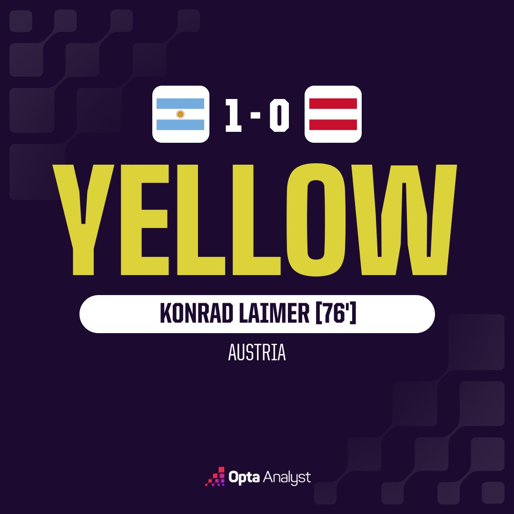
76'
Yellow card! Facundo Medina will have to be careful from now on after they are cautioned.
76'
A rash challenge from Konrad Laimer, who sends Nico González tumbling, giving Argentina a free-kick. It is not in a threatening position, but it gives them a chance to get back on the ball.
76'
Entering the final stages of this contest, let’s check on the possession stats for each team. It is Argentina who have had the more of the ball, with 57.45%, while Austria have had to settle for 42.55%. The score is 1-0.
75'
Xaver Schlager goes in on Enzo Fernández and concedes a foul. The free-kick is not in a particularly dangerous area from Austria’s viewpoint, though.
73'
What a chance! That should really have been another goal for Argentina, who would have extended their lead had Nico González kept their composure, but instead Austria survive that opportunity. Can they make their luck count?
68'
The Austria manager is looking to the substitutes’ bench, bringing on Marko Arnautović in place of Paul Wanner. Will the change make a difference? Let’s find out!
68'
Austria are making a tactical change. Stefan Posch is leaving the field and in their place comes Alexander Prass – we will soon see if this switch has the desired impact.
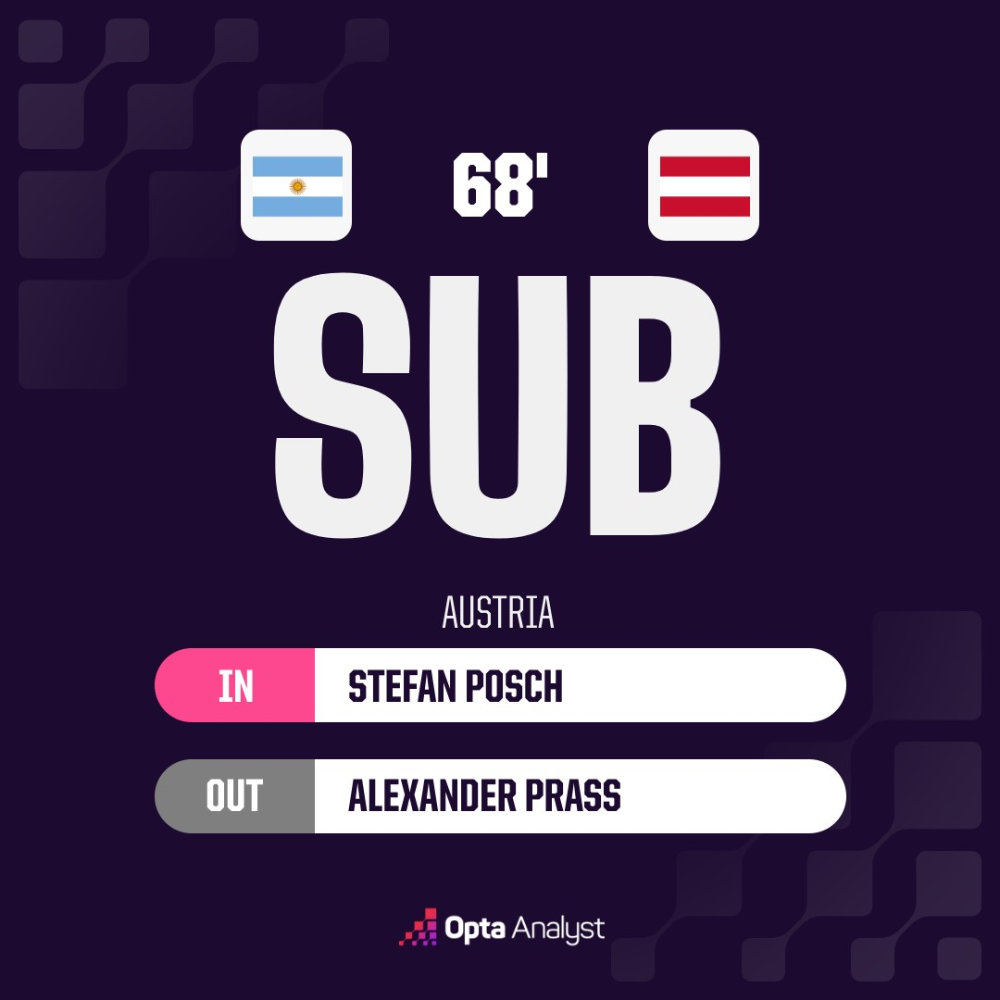
67'
Austria are making a tactical change. David Alaba is leaving the field and in their place comes Marco Friedl – we will soon see if this switch has the desired impact.
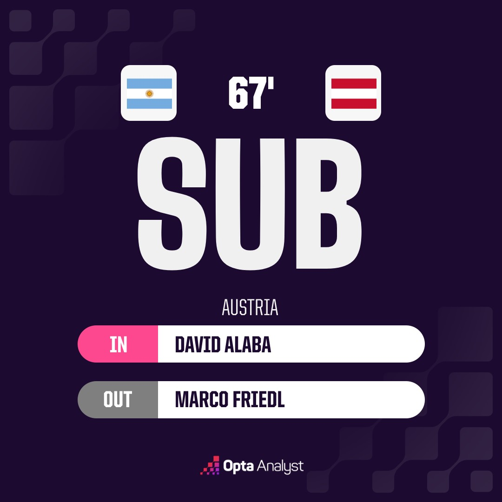
67'
MISS! A shot from Michael Gregoritsch ends up being off target. They might have done a bit better with that one, but it remains Austria 0-1 Argentina.
66'
With 25 minutes left to play, this game is about to go into its final quarter. So, that seems a good chance to check on the shot count. Austria have had 4 efforts, with 1 of those hitting the target. Argentina, on the other hand, have had 5 shots, getting 2 of those attempts on target.
65'
No luck! Lionel Messi takes on a shot that, had they got it right, might have been set to test the goalkeeper, but instead it is sent off target and Austria come away unscathed.
65'
Lautaro Martínez’s match is over as Argentina decide to make a substitution. Nico González enters the field in what looks like a tactical change.
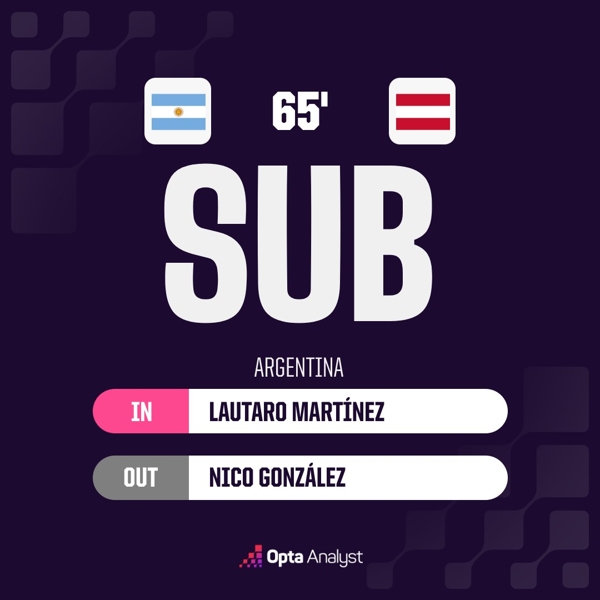
64'
A substitution for Argentina sees Thiago Almada replaced by Julián Alvarez. There does not appear to be any obvious sign of an injury, so that is a tactical switch.
63'
Still behind, but Austria are refusing to roll over - defensive urgency rising as they fend off more pressure and push for a late turnaround.
63'
In the last 15 minutes, it is Argentina who have dominated the ball, having seen 65.54% of the possession, yet they have not been able to go and turn that into a goal just yet, with their opponents standing firm.
62'
That might have been going in! A fantastic block from Kevin Danso, who gets in the way of a goal-bound effort from Enzo Fernández. Would the goalkeeper have been beaten? We will never know.
61'
It’s backs to the wall now — Argentina throwing everything into defending their advantage, with a flurry of crucial interventions.
57'
Substitution. Cristian Romero has to make way, with Nicolás Otamendi coming on in their place following an injury. That is going to come as a blow for Argentina. Can they overcome it?
57'
Nicolás Otamendi is making his 16th appearance in the FIFA World Cup.
57'
A foul from Paul Wanner on Lautaro Martínez sees Argentina win a free-kick, but it is not in a dangerous position, so Austria should be confident they can defend it easily enough.
56'
Great defending from Argentina, who are staying organised and winning key battles to preserve their lead.
55'
SAVE! A shot from outside the box by Austria Marcel Sabitzer was heading in, but Argentina Emiliano Martínez keeps it out with a smart stop.
54'
This could be a chance for Austria, after Cristian Romero fouls Konrad Laimer, handing them a free-kick in a threatening area. A good set-piece from here could really test the Argentina defense!
53'
A free-kick to Austria, as Enzo Fernández goes in and fouls Romano Schmid. However, Argentina will not mind giving one away in this area too much, with plenty of distance to their goal.
52'
Good play from Lionel Messi, who draws a foul from Xaver Schlager to hand Argentina a free-kick in a dangerous position. Will they create something from this set-piece?
50'
That’s offside! A switched-on defensive line from Austria, as they step up at the right time to catch Lionel Messi offside, and the assistant referee’s flag is up.
48'
A foul from Xaver Schlager on Lionel Messi sees Argentina win a free-kick, but it is not in a dangerous position, so Austria should be confident they can defend it easily enough.
46'
Excellent defensive work from Argentina; their organization and success in key duels are effectively safeguarding their lead.
46'
No luck! Marcel Sabitzer takes on a shot that, had they got it right, might have been set to test the goalkeeper, but instead it is sent off target and Argentina come away unscathed.
53'
Argentina are unbeaten in their last 5 FIFA World Cup matches when leading at half-time (W3, D2) dating back to 22nd November 2022 against Saudi Arabia (L1-2).
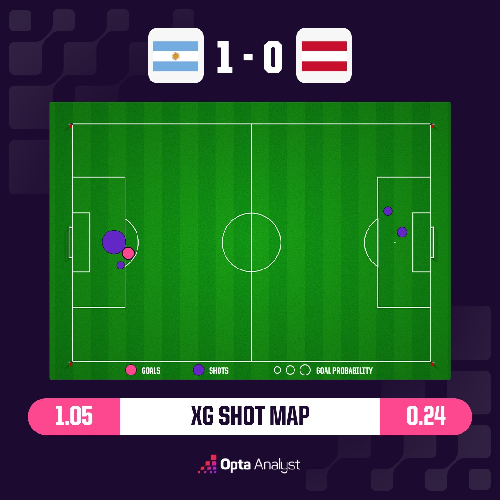
45+7'
Half-time! The referee blows the whistle and it is time for the interval. As we reach the break it is Argentina 1-0 Austria at Dallas Stadium.
45+5'
Smart football from Argentina in this second period. They're keeping possession nicely with another patient build-up, content to manage their advantage while staying alert for counter-attacking opportunities.
45+4'
This game is certainly in a bit of a lull now, with neither team having had an attempt at goal in the past 10 minutes. It could do with something to spark it into life. Austria have had more possession during the quiet spell, but are yet to do much with it.
45+2'
Foul! A free-kick now in a dangerous area for Austria, after Konrad Laimer is fouled by Lautaro Martínez. Can Austria make the most of this opportunity?
45+1'
A foul from Enzo Fernández on Romano Schmid sees Austria win a free-kick, but it is not in a dangerous position, so Argentina should be confident they can defend it easily enough.
45+1'
Despite trailing, Austria are showing real defensive grit, digging in and stopping further damage as they try to build a platform.
44'
Foul! A free-kick now in a dangerous area for Austria, after Romano Schmid is fouled by Alexis Mac Allister. Can Austria make the most of this opportunity?
43'
A rash challenge from Kevin Danso, who sends Lionel Messi tumbling, giving Argentina a free-kick. It is not in a threatening position, but it gives them a chance to get back on the ball.
41'
Austria have not had a shot on target so far in this game.
40'
The referee goes to their pocket and pulls out a yellow card, which is brandished in the direction of Stefan Posch. Will they be able to avoid a second booking?
40'
Excellent defensive work from Argentina; their organization and success in key duels are effectively safeguarding their lead.
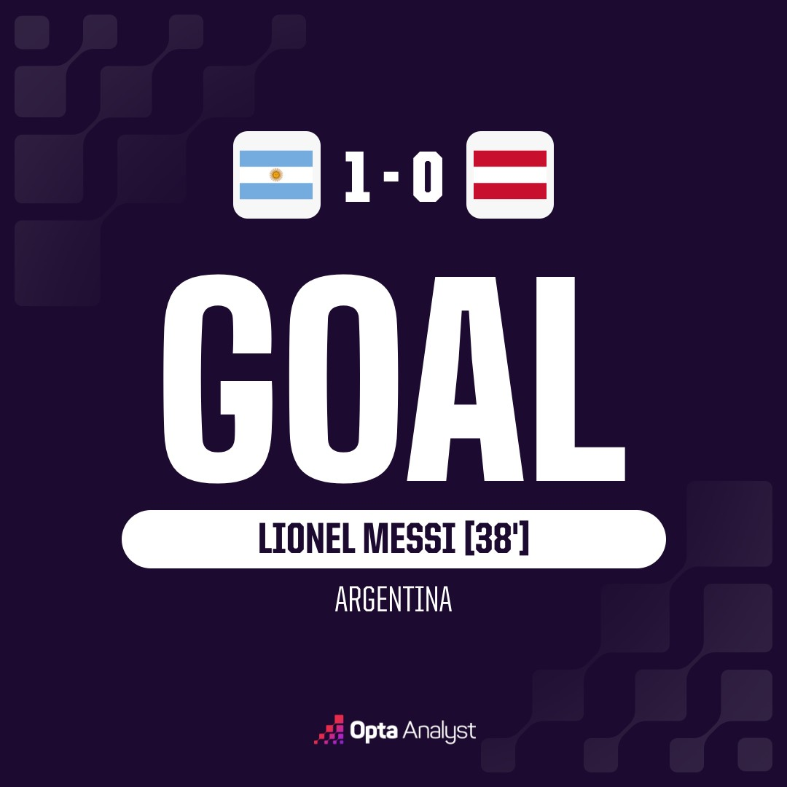
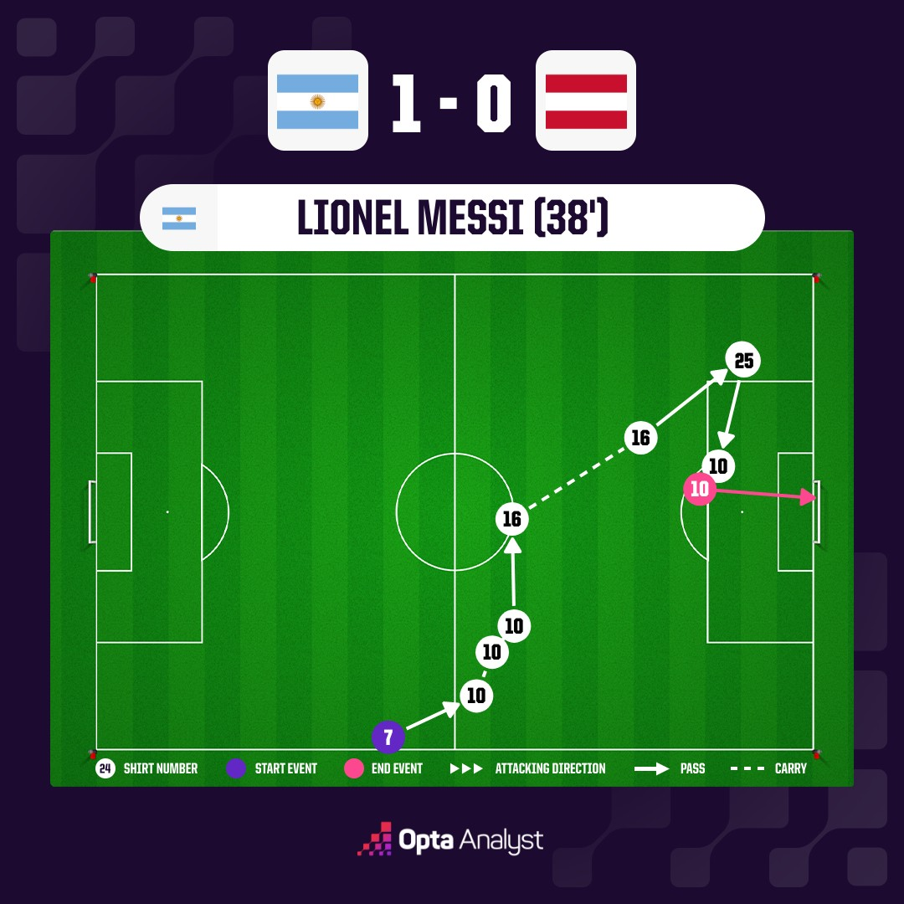
38'
Facundo Medina has assisted his first goal in the 2026 FIFA World Cup.
38'
Argentina have avoided defeat in their last 7 matches when scoring first in the FIFA World Cup, since a 1-2 loss to Saudi Arabia on 22nd November 2022.
38'
Lionel Messi has scored his 17th goal in the FIFA World Cup.
38'
GOAL! Lionel Messi scores! Argentina have the lead in this entertaining contest. There is still lots of time left for further drama, but that intervention from Lionel Messi has put Austria in a difficult position. Game on!
38'
There is plenty of possession for Argentina, with 65.19% compared to Austria 34.81 % in the last 15 minutes. However, Argentina have not been able to turn that dominance of the ball into a goal.
35'
A foul from Nahuel Molina on Marcel Sabitzer sees Austria win a free-kick, but it is not in a dangerous position, so Argentina should be confident they can defend it easily enough.
32'
A foul from Facundo Medina on Romano Schmid sees Austria win a free-kick, but it is not in a dangerous position, so Argentina should be confident they can defend it easily enough.
32'
BLOCKED, AND A CERTAIN GOAL SAVED! Lionel Messi's effort was heading in, but on the line, a player is perfectly placed to make a vital clearance. Fantastic defending from the Austria player.
23'
Corner! Austria are pushing for a goal and now they have an opportunity from this set-piece.
23'
That is a disappointing effort from Marcel Sabitzer, who went for glory but got their attempt wrong, and the shot sailed off target. A frustrating moment for Austria.
23'
HUGE CHANCE GOES BEGGING! What a miss that is from Paul Wanner, who looked all set to score a goal that their team need, but instead fails to direct their attempt into the back of the net. That was a big, big opportunity for Austria.
21'
Free-kick! A foul from Lautaro Martínez on Konrad Laimer. It is well away from Argentina’s goal, so it is unlikely to result in a chance for Austria.
19'
A lull in this match, as the teams prob and probe, but without much success. It has been 10 minutes since there was an attempt from either side, though Austria are seeing more of the ball, with 71 per cent possession to Argentina’s 29 per cent during that time.
18'
A foul from Paul Wanner on Alexis Mac Allister sees Argentina win a free-kick, but it is not in a dangerous position, so Austria should be confident they can defend it easily enough.
16'
Plenty of the ball in the last quarter-of-an-hour of this match for Austria, but Argentina have been able to hold them off with ease, with Austria having failed to even muster a shot at goal.
14'
Foul! A free-kick now in a dangerous area for Austria, after Paul Wanner is fouled by Alexis Mac Allister. Can Austria make the most of this opportunity?
13'
It’s been tight so far, and Argentina are making sure it stays that way with strong defensive discipline and well-timed clearances.
11'
Free-kick! A foul from Lisandro Martínez on Michael Gregoritsch. It is well away from Argentina’s goal, so it is unlikely to result in a chance for Austria.
10'
Free-kick! A foul from Romano Schmid on Facundo Medina. It is well away from Austria’s goal, so it is unlikely to result in a chance for Argentina.
9'
OH NO! Lionel Messi can’t keep their composure and find the back of the net from the penalty spot, and a huge chance for Argentina to extend their lead goes begging. The score remains level!
7'
VAR overturns the decision! The video official sees enough reason for the original call to be overturned, and so elects to intervene here.
7'
Decision checked. VAR is going to look at this incident again, so this decision may well not stand. Let’s wait and see what the officials do here.
4'
PENALTY! Big chance now for Argentina to take the lead, with Austria’s resolve having been broken by Stefan Posch’s foul. This could be a huge moment, will Argentina take their chance?
2'
Offside! Thiago Almada thought they were through on goal, but the Austria defence stepped up in time to catch them offside, and the assistant referee puts their flag up.
1'
We are under way as Argentina kick off at Dallas Stadium. Let's hope an entertaining contest is in store.
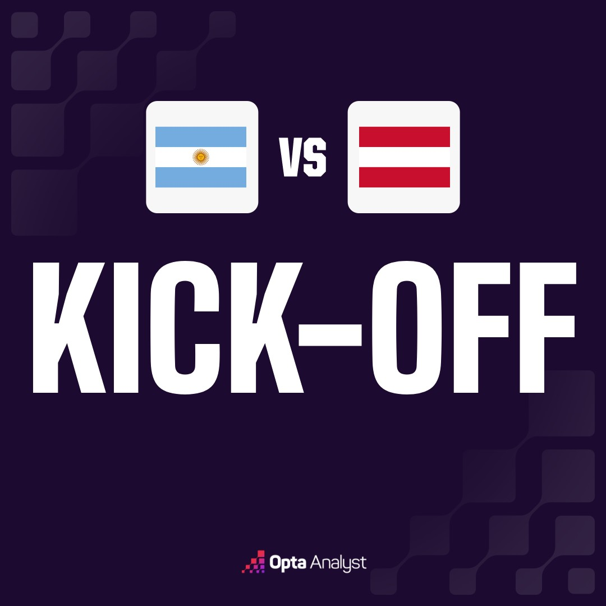
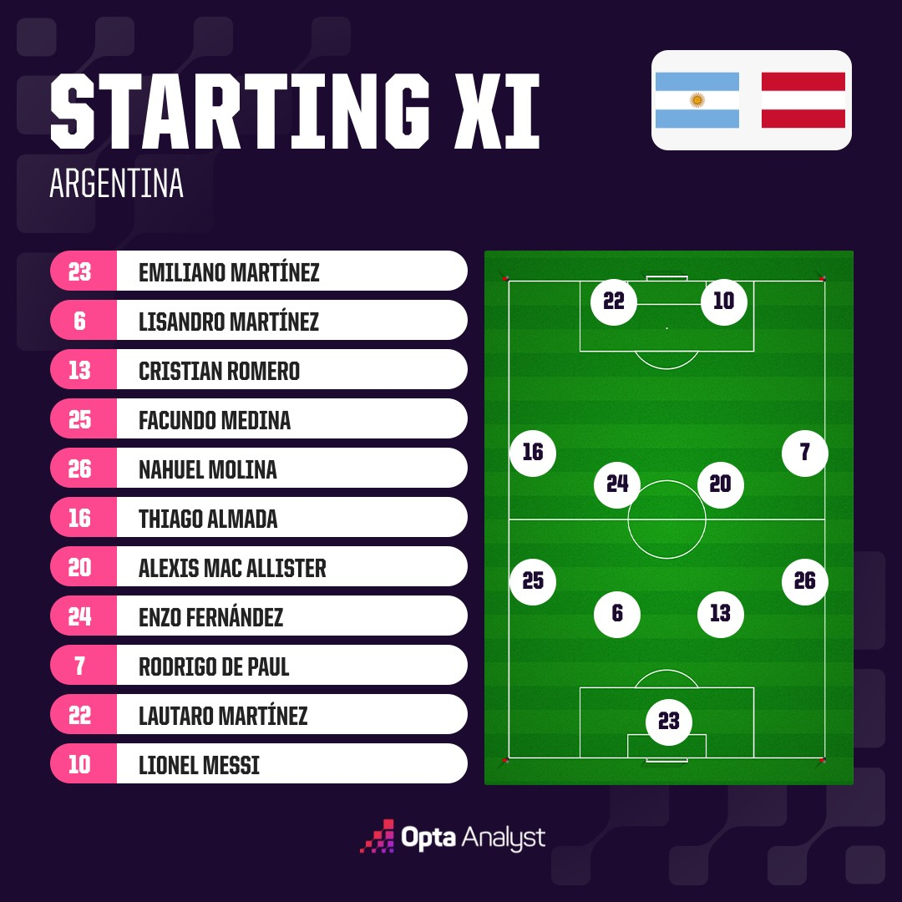
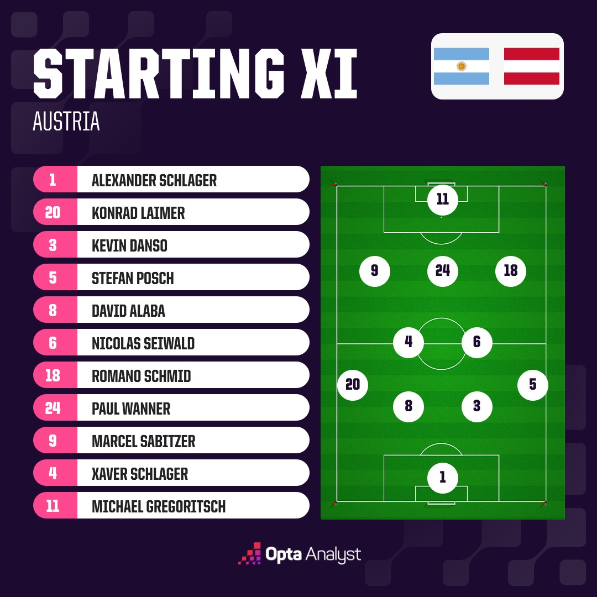
Lionel Messi is making his 28th appearance in the FIFA World Cup.
Argentina have won their last 2 games when L. Messi has scored
Argentina play Austria on Monday at Dallas Stadium in a clash of teams who boast perfect starts early in the FIFA World Cup group stage.
Argentina earned a 3-0 victory over Algeria in their opening World Cup group stage match on June 16. Lionel Messi was the only player on the scoresheet, netting three goals. They have eight consecutive victories in all competitions.
Austria defeated Jordan 3-1 in their opening World Cup group stage game, a June 16 clash at San Francisco Bay Area Stadium, extending their unbeaten streak to six. Romano Schmid and Marko Arnautovic were on the scoresheet in the win.
Argentina and Austria are first and second in the group, respectively, level on three points. Elsewhere in the group, Jordan are sitting third on zero points. Algeria are fourth on zero points.
The teams played out a 1-1 draw in their last meeting in May 1990.
Messi has the early World Cup scoring lead for Argentina after netting three goals against Algeria. With goals against Jordan, Schmid and Arnautovic are the early leading World Cup scorers for Austria.
Argentina have scored in each of their last eight matches across all competitions. They have netted in every match since a World Cup Qualifiers meeting with Ecuador in September 2025. The Argentinian side have been similarly successful at preventing opponents from scoring, as they have shut out the opposition over their last 356 minutes of play. Mauritania were the last team to score on them in a March friendly.
Argentina have won each of their last six matches in all competitions. The Argentinian side scored 17 and conceded one over that stretch, scoring first in all six contests. They had eight first-half goals, while their opponents failed to find the net in the first 45 minutes. The Austrian side have won five and drawn one in their last six. The Austrian side scored 13 and conceded three over that period, netting first in five of the six. They had three goals in the first half, while their opponents netted one time before the break.
-
General
Possession 53.6% 53.58946.41146.4% Possession lost in defensive half 32 321313 Possession lost in middle third 38 385252 Duels 98 989696 Duels success rate 51.0% 51.0247.91747.9% Aerial duels 27 272727 Aerial duels won 40.7% 40.74159.25959.3% Successful dribbles 6 666 Fouls won 13 131313 Offsides 2 200 Corner awarded 1 133 -
Distribution
Passes 554 554468468 Long passes 27 272121 Long passes proportion (%) 4.9% 4.8744.4874.5% Passing accuracy 89.2% 89.1785.68485.7% Passes in opponents' half 266 266280280 Passing accuracy in opponents' half (%) 85.3% 85.3388080.0% Total passes in the final third 97 97154154 Passing accuracy in final third (%) 77.3% 77.3271.42971.4% Forward passes 310 310295295 Forward passes (%) 56.0% 55.95763.03463.0% Through balls 3 311 Final third entries 40 405858 Penalty area entries 11 113333 Total open play crosses 2 21313 Crosses 4 41717 Crossing accuracy 25.0% 2517.64717.6% -
Attack
Goals 2 200 Shots 12 1266 Shots on target 5 511 Blocked shots 3 300 Headed shots 1 133 Shots outside the box 2 222 Shots inside the box 10 1044 Shots accuracy excluding blocked shots 55.6% 55.55616.66716.7% Shooting accuracy 41.7% 41.66716.66716.7% Key Passes 6 655 -
Defence
Tackles 21 211212 Tackles success rate 52.4% 52.38158.33358.3% Clearances 35 351515 Interceptions 8 899 Recoveries 42 422727 Attacking third recovery 0 055 Defensive third recovery 30 301010 Midfield third recovery 12 121212 Recoveries in attacking half (%) 0.0% 018.51918.5% -
Discipline
Fouls conceded 13 131313 Yellow cards 2 222 Red cards 0 000